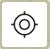
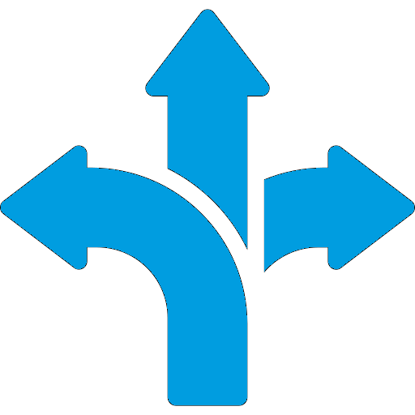
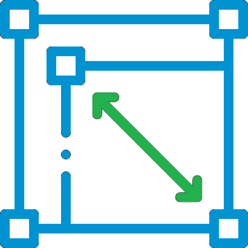
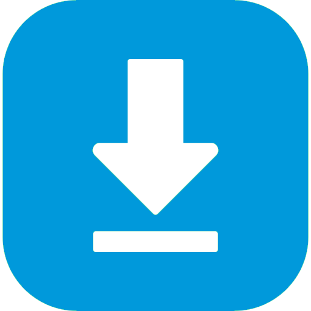

PMet Route Map.
PMet app is Lightweight and designed with Latest Technology to explore your journey from Patna Metro. Best solution for the information of metro stations, routes, Journey plan, Estimated Travel time, Fare, Distance and finding Nearest Metro Station from your current location.
- Download Mobile/Desktop Application for fast loading and data saving.
- Click/Tap on Install App button showing below when open the website or tap on three dot and then tap Add to Home Screen.
- For Desktop see also in URL search bar(App available) for desktop application installation.
- Click/Tap on Install.
- After Installing syncing with device for security checkup(only for Mobile).
- After successfully installed app in your device. Tap/Double click on Icon in your Mobile/Desktop to explore Smart journey.
- Why using our app ?
- Light Weight Application with latest technology.
- Memory Saving : Our Application usage lessthan <1MB of memory/storage.
- Data Saver : You can use this Application without internet after first time usage.
- Data Security : Our Application not directly installed through apk, to access your other data.
- Time Saving : Offline access features make this app better from another Application to save time if internet connection is disconnected or not available.
- App Update : Automatically update your application when new updates are available and notify for new version. No more data consuption due to its Lightweight and latest technology.
Mobile/Desktop Application
- Select source station (Ex:Danapur Cantonment)
- Select Destination Station (Ex: New ISBT)
- Click/Tap on
 Swap Button to exchange selected source and destination
station(if
required).
Swap Button to exchange selected source and destination
station(if
required). - Click/Tap on "Show Journey" button.
- Showing route & stations on map from "Source Station" to "Destination Station".
- Click/Tap on Journey Info ▼ to explore your journey details.
 Plan
Your Journey
Plan
Your Journey
- Checkout the Enable locationshowing below Show Journey button.
- Nearest Metro Station highlighted on the map and showing in journey info panel, and automatically selected in source station.
- Select only destination station if you want.
- Click/Tap on "Show Journey" button.
- Journey Info ▼ panel showing your journey details.
 Enable Location(For finding nearest metro station)
Enable Location(For finding nearest metro station)
- Zoom in to map >> Tap on (+) icon on map.
- Zoom out from map >> Tap on (-) icon on map.
- Full Screen Map >> Tap on icon on map.
- Change map theme >> Tap on icon on map and select desired map theme.(shown below)
- Street Map View: Google Map Street View.
- Satellite Plain: Google Satellite Map with no lable or information of landmarks.
- Satellite Info: Google Satellite Hybrid Map, satellite view with all information like google map.
- Light Gray: Light Gray map for light loading and data saver.
- DayLight Street: Daylight view of street map.
- Night Street View: Dark theme of street view map.
 Explore Map
Explore Map
- Select Route Map from menu
 top right corner.
top right corner. - Tap on location icon in the map 
- Showing your nearest metro station on map and direction to the station from your current location.
- Click/Tap on map icon (*) to get Direction on google map.
 Get Direction to the Nearest Metro Station
- To measure the distance on map Tap on icon on map.
- Tap on Create a new measurement.
- Tap on map for statring point of measurement and so on continuesly and finish measurement.
- Distance showing on starting measurement on map.
 Measure Distance
- To downloading route map. Go to Route Map or Metro Lines page from
menu.
- Click/Tap on link showing inside the map. Example:Metro Map 1
- Map opens in a new window.
- Tap on image and Click/Tap on Download image.
- Open your Gallery or File Manager to view downloaded map.
 Downloading Route Map
Legend: Elevated | Underground | Interchange Station